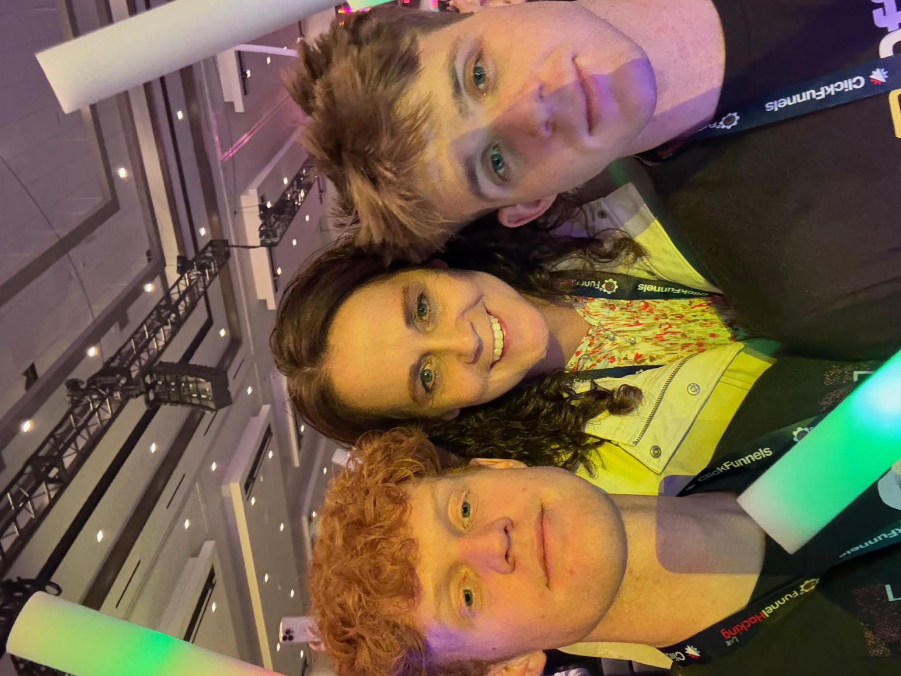

Projected Career Path
I plan to work as a digital marketing strategist for a global brand, focusing on analytics, branding, and customer engagement through modern marketing tools and platforms.
My Experience So Far
This fall I worked closely with my mothers company to develope marketing campaigns and manage clientele.
My Future Contributions
I aim to bring fresh, insights to the field. My goal is to develop ethical marketing strategies that build authentic relationships between companies and consumers.
This is a video at my first attempt of trying to do digital marketing for my window washing business.